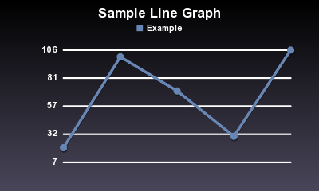
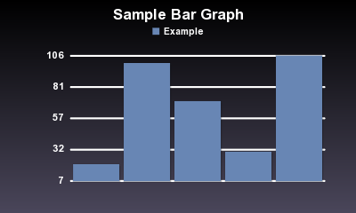
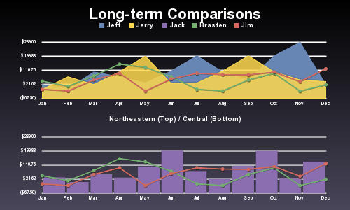
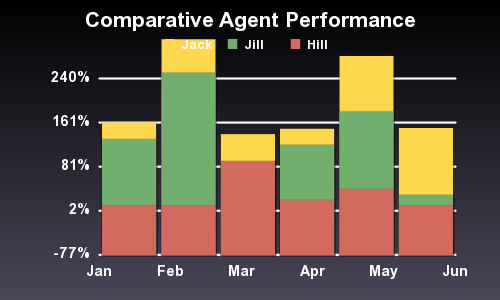
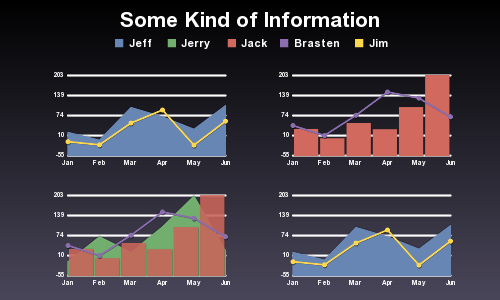

Get Version
0.2.5Home Documentation RubyForge Project
Don’t Worry.
Be Scruffy.
Beautiful Graphs for Ruby.
What is Scruffy?
Scruffy is a Ruby library for generating attractive and powerful graphs, useful for web applications, print media and many others.
Scruffy’s key features include:
- Built on SVG
Scruffy uses SVG internally for rendering graphs. This allows Scruffy to render your graph identically at almost any size.
- Mix-n-Match Graphs
A Scruffy graph isn’t limited to a single graph type (line, bar, area, etc). You can specify a different type for every data set.
- Snapshot Rendering
You can render a Scruffy graph as many times as you want, and change any settings between renders. Data, colors, even the graph size and image type can all be changed for the next render.
- Easily Extendable
Scruffy is designed to be extremely extendible. Adding new graph types or themes can be done in as little as a few lines of code. If you need more control over your graphs, you can customize the layouts, data generation, almost anything.
Installing
sudo gem install scruffy
Demonstration of usage
Pie Chart
graph = Scruffy::Graph.new
graph.title = "Favourite Snacks"
graph.renderer = Scruffy::Renderers::Pie.new
graph.add :pie, '', {
'Apple' => 20,
'Banana' => 100,
'Orange' => 70,
'Taco' => 30
}
graph.render :to => "pie_test.svg"
graph.render :width => 300, :height => 200,
:to => "pie_test.png", :as => 'png'

Line Graph
graph = Scruffy::Graph.new
graph.title = "Sample Line Graph"
graph.renderer = Scruffy::Renderers::Standard.new
graph.add :line, 'Example', [20, 100, 70, 30, 106]
graph.render :to => "line_test.svg"
graph.render :width => 300, :height => 200,
:to => "line_test.png", :as => 'png'

Bar Graph
graph = Scruffy::Graph.new
graph.title = "Sample Line Graph"
graph.renderer = Scruffy::Renderers::Standard.new
graph.add :line, 'Example', [20, 100, 70, 30, 106]
graph.render :to => "line_test.svg"
graph.render :width => 300, :height => 200,
:to => "line_test.png", :as => 'png'

Split Graph
graph = Scruffy::Graph.new
graph.title = "Long-term Comparisons"
graph.value_formatter = Scruffy::Formatters::Currency.new(
:special_negatives => true, :negative_color => '#ff7777')
graph.renderer = Scruffy::Renderers::Split.new(
:split_label => 'Northeastern (Top) / Central (Bottom)')
graph.add :area, 'Jeff',
[20, -5, 100, 70, 30, 106, 203, 100, 50, 203, 289, 20],
:category => :top
graph.add :area, 'Jerry',
[-10, 70, 20, 102, 201, 26, 30, 106, 203, 100, 50, 39],
:category => :top
graph.add :bar, 'Jack',
[30, 0, 49, 29, 100, 203, 70, 20, 102, 201, 26, 130],
:category => :bottom
graph.add :line, 'Brasten',
[42, 10, 75, 150, 130, 70, -10, -20, 50, 92, -21, 19],
:categories => [:top, :bottom]
graph.add :line, 'Jim',
[-10, -20, 50, 92, -21, 56, 92, 84, 82, 100, 39, 120],
:categories => [:top, :bottom]
graph.point_markers = ['Jan', 'Feb', 'Mar', 'Apr', 'May',
'Jun', 'Jul', 'Aug', 'Sep', 'Oct', 'Nov', 'Dec']
graph.render :to => "split_test.svg"
graph.render :width => 500,
:to => "split_test.png", :as => 'png'

Stacking Graph Types
graph = Scruffy::Graph.new
graph.title = "Comparative Agent Performance"
graph.value_formatter = Scruffy::Formatters::Percentage.new(:precision => 0)
graph.add :stacked do |stacked|
stacked.add :bar, 'Jack', [30, 60, 49, 29, 100, 120]
stacked.add :bar, 'Jill', [120, 240, 0, 100, 140, 20]
stacked.add :bar, 'Hill', [10, 10, 90, 20, 40, 10]
end
graph.point_markers = ['Jan', 'Feb', 'Mar', 'Apr', 'May', 'Jun']
graph.render :to => "stacking_test.svg"
graph.render :width => 500, :to => "stacking_test.png", :as => 'png'

Multi-viewport Multi-layered
graph = Scruffy::Graph.new
graph.title = "Some Kind of Information"
graph.renderer = Scruffy::Renderers::Cubed.new
graph.add :area, 'Jeff', [20, -5, 100, 70, 30, 106],
:categories => [:top_left, :bottom_right]
graph.add :area, 'Jerry', [-10, 70, 20, 102, 201, 26],
:categories => [:bottom_left, :buttom_right]
graph.add :bar, 'Jack', [30, 0, 49, 29, 100, 203],
:categories => [:bottom_left, :top_right]
graph.add :line, 'Brasten', [42, 10, 75, 150, 130, 70],
:categories => [:top_right, :bottom_left]
graph.add :line, 'Jim', [-10, -20, 50, 92, -21, 56],
:categories => [:top_left, :bottom_right]
graph.point_markers = ['Jan', 'Feb', 'Mar', 'Apr', 'May', 'Jun']
graph.render :to => "multi_test.svg"
graph.render :width => 500, :to => "multi_test.png", :as => 'png'

Source Code
The trunk repository is svn://rubyforge.org/var/svn/scruffy/trunk for anonymous access.
Rubyforge Project is here
News
- 2008-10-13, Scruffy 0.2.5 – Fixed font_family settings from theme.
- 2008-08-22, Scruffy 0.2.4 – Bug fixes: Bug 21517, legend text missing, fixed. Bug 21604, Fails to properly require RMagick, fixed.
- July 8th, 2008, Scruffy 0.2.3 – Pie Charts added.
- August 18th, 2006, Scruffy 0.2.2 – Significant changes from 0.1.0! New layouts, better rendering, etc. Check out more examples at iBrasten.com
- August 11th, 2006, Scruffy 0.1.0 – the first release intended for public use – has been posted!
License
This code is free to use under the terms of the MIT license.
Contact
Scruffy was created by Brasten Sager.
Collaborative work by A.J. Ostman.
13th October 2008